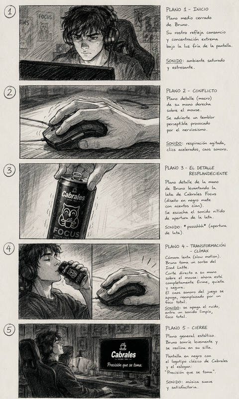
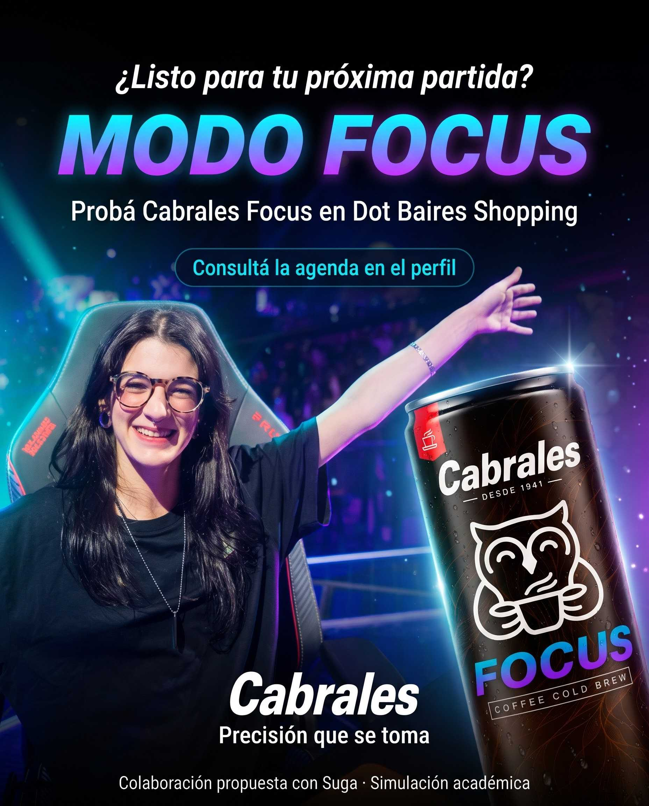
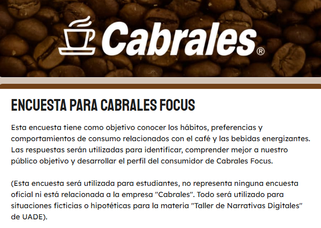
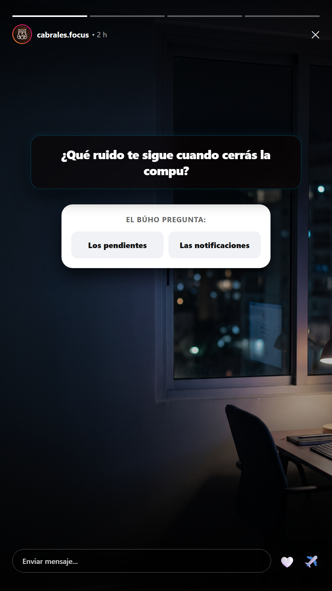

CABRALES FOCUS
"Precisión que se toma"
1v1 decisivo en VALORANT. La vibración de una notificación distrae su atención por un segundo: pierde la ronda. Hiperestimulación digital.
Cabrales Focus no es un brebaje mágico: es el catalizador de un ritual de preparación y concentración deliberada antes de lo que importa.

Embudo de Lanzamiento: Secuencia P1 ➔ P2 ➔ P3

P1 · "Antes de encontrar Focus"
Concepto Dramático: Primera aparición de Cabrales Focus en redes sociales. Muestra a Bruno en su habitación frente a la notebook intentando estudiar; la atención fragmentada lo vence. Cierra la pantalla y se retira; en el encuadre queda visible una lata en otro escritorio. El espectador descubre el producto antes que él.
Hay días en los que el foco parece estar en otra parte. Bruno todavía no sabe lo que se va a cruzar. Descubrí su historia completa en "Turno de noche", en nuestro canal de YouTube. Cabrales Focus. Precisión que se toma. #CabralesFocus #TurnoDeNoche #ColdBrew #PrecisionQueSeToma
/pfp_focus_ig.png)
/1.png)
/2.png)
/3.png)
/4.png)
/5.png)
/6.png)
Deslizá para descubrir cómo combinamos 80 años de maestría cafetera con la ciencia de la L-teanina.
☕ Lata 240 ml · 100% Arábica de Brasil
⚡ Escaneá el QR bajo la anilla y sumate al Club Focus.
P2 · "Conocé Cabrales Focus"
Secuencia Pedagógica: Desglose estructurado del concepto cold brew para desarmar confusiones comunes (no es café caliente con hielo) y educar sobre la sinergia nootrópica entre 80 mg de cafeína y 100 mg de L-teanina.
Un café pensado para acompañar tus partidas y tus horas de estudio o trabajo. Coffee Cold Brew con azúcar y L-teanina, listo para tomar. Deslizá para conocer qué contiene, cómo se elabora y en qué momentos sumarlo a tu rutina. Cabrales Focus. Precisión que se toma. #CabralesFocus #ColdBrew #LTeanina #PrecisionQueSeToma #ClubFocus

La experiencia sigue en Club Focus: conocé la app y acompañame en un stream especial donde mostraré cómo registrar una lata, sumar puntos y canjear tu bono para participar por 2 entradas al FiReMAJOR Buenos Aires 2027.
🎟️ 1 lata = 100 puntos = 1 bono. Consultá la agenda en el enlace del perfil.
P3 · "Entrá a Modo Focus con Suga"
Desglose Metodológico de Copywriting (Fórmula AIDA):
¿Listo para entrar en Modo Focus? Con Suga y Cabrales Focus, te invitamos a descubrir nuestro cold brew en Dot Baires Shopping. La experiencia sigue en Club Focus: conocé la app y acompañá a Suga en un stream donde mostrará cómo registrar una lata, sumar puntos y canjear un bono para participar por dos entradas al FiReMAJOR Buenos Aires 2027. Una lata registrada suma 100 puntos; un bono cuesta 100. Hasta diez bonos por usuario y un ganador de dos entradas. Consultá la agenda de la activación y del stream desde el enlace del perfil. Cabrales Focus. Precisión que se toma. #CabralesFocus #ModoFocus #ClubFocus #DotBaires #Suga #sugavct #VALORANT
Expansión & Engagement: P4, P5 y P6 hacia Club Focus

P4 · "Una pausa con Solange"
Mecanismo de Prosumición (Carlos Scolari): Encuentro callejero casual de 30 segundos donde Solange comparte su rutina laboral/académica nocturna con la lata. Convoca a la comunidad a subir su propio ritual con el hashtag #MiVentanaFocus.
Una pausa, un café frío y una charla antes de seguir. ¿En qué momento del día hacés tu pausa? Contanos o compartí tu escena con #MiVentanaFocus. Descubrí a Solange en Historias Focus. Compartir historias no requiere compra ni puntos; reutilizamos aportes solo con autorización y crédito. Convocatoria para mayores de 18 años. Cabrales Focus. Precisión que se toma. #MiVentanaFocus #CabralesFocus #HistoriasFocus #PausaActiva
P5 · "Una última bala: FiReMAJOR 2027"
Anclaje en la Realidad Competitiva (RTM): Reacciona al cierre del FiReSPORTS Last Chance disputado en Buenos Aires (29/10 al 01/11/2026) y capitaliza la conversación hacia el evento histórico confirmado para el país: el FiReMAJOR Buenos Aires 2027 (31/05 al 20/06/2027).
Buenos Aires vivió la tensión de la última bala. En 2027, el Major llega a casa. Cabrales Focus × FiReSPORTS: una colaboración propuesta para acercarte a la tribuna del FiReMAJOR Buenos Aires 2027. Comprá una lata, descargá Club Focus, registrate y escaneá su código único. Sumá puntos y canjealos por bonos de participación. Cada lata suma 100 puntos y cada bono cuesta 100. Podés canjear hasta diez bonos por usuario; un ganador recibe dos entradas. Consultá tus participaciones en Mi Club. Precisión que se toma. #CabralesFocus #FiReMAJOR2027 #CS2 #EsportsArgentina #ClubFocus

P6 · "Tu momento Focus (Interactivo)"
Secuencia de Escucha Activa (Clase 11): Diseñada para relevar hábitos de concentración de la comunidad mediante stickers nativos de Instagram:
Cada partida y cada tarea empiezan de una forma distinta. Elegí, contá y descubrí otras historias. Solo publicaremos aportes con autorización en nuestro Archivo de Ventanas. Cabrales Focus. Precisión que se toma. #TuMomentoFocus #ModoFocus #CabralesFocus #StoriesFocus
Doble Embudo de Captación hacia Club Focus
Convocatoria #MiVentanaFocus y encuestas de distracciones derivan al Archivo de Ventanas y al relato escrito de Solange en la app (100% libre, sin barrera de compra).
FOCUS
Compra de latas y escaneo de códigos QR únicos bajo la anilla acumulan puntos en la app para canjear por bonos para el FiReMAJOR 2027 y descuentos en eShop.